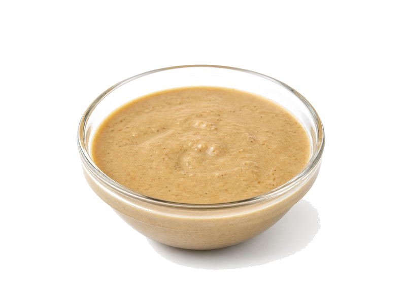

Orzechy
Tahini (pasta sezamowa)
Tahini (pasta sezamowa): 17 g białka, 595 kcal, 21 g węglowodanów i 54 g tłuszczu na 100 g. Kategoria: Orzechy.
Kalorie595 kcalna 100 g
Białko / proteiny17 g
Węglowodany21 g
Tłuszcz54 g
Cena (szac.)~5,00 złza 100 g
Ceny zaktualizowano: maj 2026 (szacunek — ceny w popularnych supermarketach)
Porcja: łyżka (15g)
| Kalorie | 89 kcal |
|---|---|
| Białko | 2.5 g |
| Węglowodany | 3.1 g |
| Tłuszcz | 8.1 g |
| Cena (szac.) | ~0,75 zł |
Szczegółowe składniki odżywcze na 100 g
| Wartość energetyczna (kalorie) | 595 kcal |
|---|---|
| Białko (proteiny) | 17 g |
| Węglowodany | 21 g |
| Tłuszcz | 54 g |
| Tłuszcze nasycone | 7.5 g |
| Tłuszcze nienasycone | 46.5 g |
| Witaminy i minerały | Wapń, Magnez, Witamina E |
| Współczynnik kcal / 1 g białka | 35.0 |
| Cena produktu (szac. za 100 g) | ~5,00 zł |
| Cena za 100 g białka (szac.) | ~29,41 zł |